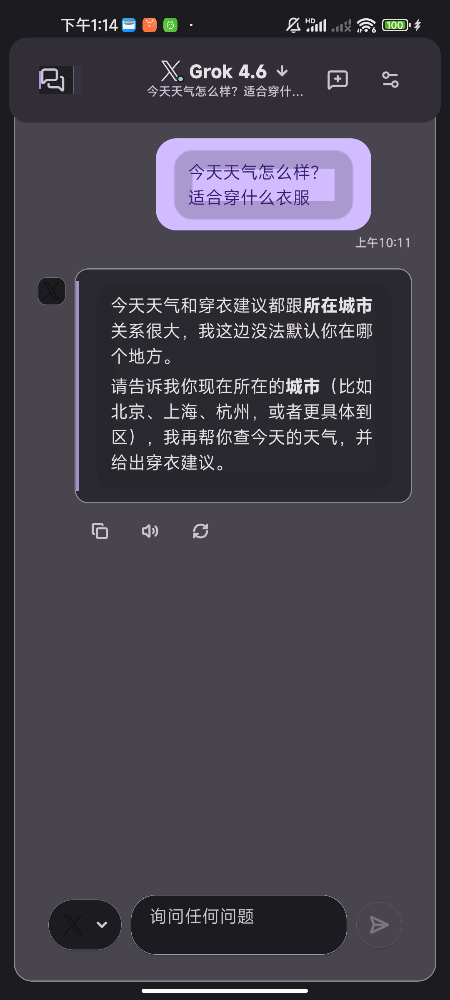
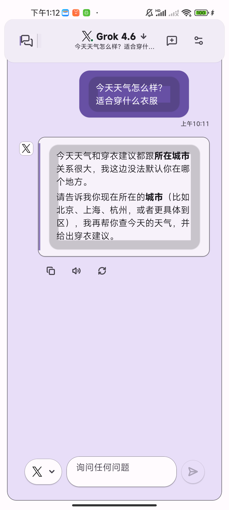

在你的设备上，
掌控每一次
AI 交互。
IsleMind 把对话、知识、任务与工具放进一个工作区。模型由你选择，数据边界由你决定，任务状态始终清楚可见。
数据默认留在本机
支持多个模型服务商
任务可取消与恢复


01真实应用画面模拟器 · Material light
Android app / simulator evidence1080 × 2400
实机界面
看见正在运行的
IsleMind。
这里展示的是最近一次模拟器演示与测试证据，不是抽象的产品插画。切换不同画面，了解工作区、运行诊断和主题系统。
01
真正的应用画面，而不是占位稿。
模型、消息、引用与输入区在同一条工作流中。你可以在 Android 上直接开始对话，再把它交给知识或任务工作区继续处理。
- Material 3 主题与清晰状态层级
- 模型、上下文与回复保持在同一视图
- 来自 Android 模拟器演示模式
运行时
从请求发出，
到结果交付。
IsleMind 把模型路由、工具授权、运行状态和工作产物放进同一条可检查的记录里。复杂任务不再是一个黑盒。
↳可取消、可恢复、可追溯
WORKSPACE / RUN 0042RUNNING
研究资料整理2 / 4
读取来源与引用12 个来源 · 已保存检查点
识别待验证假设运行中 · 可以取消或继续
生成结构化摘要等待上一阶段
写入任务清单等待上一阶段
证据链已记录最后更新：刚刚
数据边界
清楚知道什么
留在本机。
本地优先不是一句口号。每一类内容的默认位置、联网条件和凭据处理方式，都有明确边界。
01
对话、设置、知识索引默认保存在本机，可随时导出与恢复
LOCAL02
服务商凭据使用系统安全存储，不进入便携导出
SECURE03
推理、模型发现与语音按所选服务商与启用状态联网
ON USE04
MCP、联网检索与第三方工具只有在你启用后，才进入请求路径
OPT-IN模型服务
连接你的模型，
不被单一平台绑定。
OpenAI、Anthropic、Gemini、xAI、DeepSeek、Qwen、GLM，以及 OpenAI-compatible 与 Anthropic-compatible 端点。
OpenAIAnthropicGeminixAIDeepSeekQwenGLMCompatible endpoints
LATEST BUILDAVAILABLE
v1.0.21